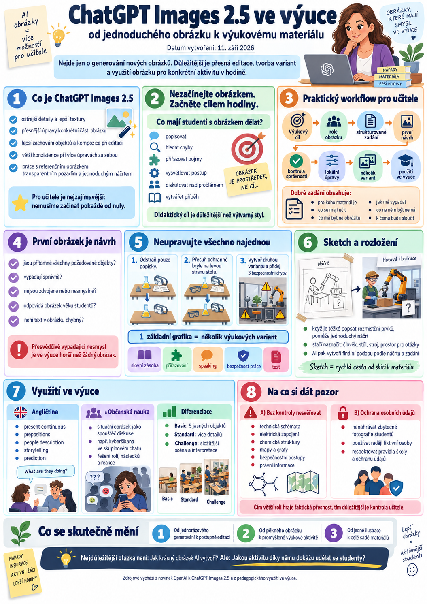

{kind=link}

Generování obrázků pomocí umělé inteligence už dávno není jen způsob, jak si vytvořit pěknou ilustraci do prezentace. S novým modelem ChatGPT Images 2.5, který OpenAI představilo 8. září 2026, se práce s obrazem posouvá mnohem blíže k běžné tvorbě výukových materiálů.
Model přináší ostřejší detaily, přesnější úpravy existujících obrázků, lepší zachování jejich původního obsahu a větší konzistenci při postupných editacích. OpenAI zároveň uvádí, že generování může být až o 50 % rychlejší než u předchozí generace Images 2.0.
Pro učitele je však mnohem zajímavější něco jiného: nemusíme pokaždé vytvářet obrázek znovu. Můžeme vytvořit první verzi, zkontrolovat ji a potom říkat například:
„Ponech celý obrázek stejný, ale odstraň popisky.“
„Změň pouze pravou část schématu.“
„Přidej do obrázku pět předmětů, které budou studenti pojmenovávat.“
„Zachovej scénu, ale vytvoř jednodušší variantu pro úroveň A1.“
Právě tento způsob práce může být pro učitele mnohem důležitější než samotná kvalita generovaných obrázků.
Co je ChatGPT Images 2.5
V prostředí ChatGPT se nový systém oficiálně jmenuje ChatGPT Images 2.5. V API existují dvě varianty – GPT-Image-2.5 Flare a GPT-Image-2.5 Sunburst. Pro běžného učitele ale není potřeba API vůbec řešit. Obrázky lze vytvářet přímo v ChatGPT. Model je postupně zpřístupňován uživatelům ChatGPT na počítači, mobilu i webu napříč tarify.
Nová generace se soustředí především na několik oblastí:
- lepší dodržování složitějšího zadání,
- přesnější úpravy konkrétní části obrázku,
- zachování lidí, objektů a kompozice při editaci,
- větší konzistenci při několika úpravách za sebou,
- lepší práci se složitějším rozložením,
- kvalitnější textury a přirozenější osvětlení,
- možnost transparentního pozadí,
- práci s referenčními obrázky,
- tvorbu podle jednoduchého náčrtu.
OpenAI také uvádí zlepšení přesnosti a rozložení infografik.
A právě kombinace generování a následných úprav je pro školu velmi zajímavá.
Nezačínejte obrázkem. Začněte cílem hodiny.
Nejčastější chyba při používání generátorů obrázků v učitelské praxi vypadá asi takto:
AI nějaký obrázek vytvoří. Pravděpodobně bude pěkný. Jenže to ještě neznamená, že bude didakticky užitečný.
Mnohem lepší otázka zní:
Například:
- popisovat ho,
- hledat chyby,
- přiřazovat pojmy,
- porovnávat dvě situace,
- odhadovat, co se stalo,
- vysvětlovat pracovní postup,
- procvičovat slovní zásobu,
- diskutovat nad problémem,
- doplňovat části schématu,
- vytvářet vlastní příběh.
Teprve potom má smysl obrázek generovat.
Praktický workflow pro učitele
1. Určete výukový cíl
Nejdříve si formulujte, co má student po aktivitě zvládnout.
Například:
Angličtina A1:
Student dokáže pojmenovat předměty v dílně a použít vazbu There is / There are.
Občanská nauka:
Student dokáže rozpoznat různé formy rizikového chování na sociálních sítích.
Odborný předmět:
Student dokáže identifikovat základní chyby při používání osobních ochranných pracovních prostředků.
To je pro další práci mnohem důležitější než výtvarný styl obrázku.
2. Rozhodněte, jakou roli bude obrázek v hodině mít
AI obrázek nemusí být dekorace.
Může fungovat například jako:
Motivační obrázek
Studenti se podívají na scénu a odhadují téma hodiny.
Picture description
Studenti popisují osoby, prostředí nebo činnost.
Find the mistakes
AI vytvoří scénu obsahující několik úmyslných chyb.
Vocabulary picture
Na jednom obrázku jsou předměty, které mají studenti pojmenovat.
Situační karta
Obrázek představuje konkrétní problém, který studenti řeší.
Komiks nebo sekvence
Několik obrázků představuje jednotlivé kroky děje nebo pracovního postupu.
Obrázek bez popisků
Studenti musí části označit sami.
Obrázek s chybnými popisky
Úkolem je chyby odhalit.
To je didakticky podstatně zajímavější než obyčejná ilustrace v PowerPointu.
3. Připravte strukturované zadání
Není nutné psát „magické prompty“. Stačí dát AI dostatek informací.
Dobré zadání může mít šest částí:
1. Pro koho materiál vzniká
Například:
2. Co se mají učit
3. Co má být na obrázku
4. Jak má obrázek vypadat
5. Co na obrázku být nemá
6. K čemu bude používán
Výsledné zadání může vypadat například takto:
Vytvoř přehlednou výukovou ilustraci pro studenty 1. ročníku střední školy s angličtinou na úrovni A1. Obrázek bude sloužit k procvičování slovní zásoby nářadí. Zobraz pracovní stůl v mechanické dílně. Na stole musí být hammer, screwdriver, pliers, tape measure, screws a safety glasses. Nepřidávej žádné textové popisky. Jednotlivé předměty musí být dobře rozpoznatelné a nesmí se překrývat. Použij realistický, ale čistý vzdělávací styl.
4. První obrázek považujte za návrh, ne za hotový materiál
Tohle je důležité.
AI generátor není tiskárna, do které vložíme prompt a z druhé strany vyjede dokonalý pracovní list.
První obrázek bych považoval spíš za návrh.
Učitel by měl zkontrolovat:
- zda jsou všechny požadované objekty skutečně přítomné,
- zda vypadají správně,
- zda nejsou některé věci zdvojené,
- zda obrázek neobsahuje nesmysly,
- zda odpovídá věku studentů,
- zda není příliš komplikovaný,
- zda text v obrázku neobsahuje chyby.
U odborných témat je tato kontrola zvlášť důležitá.
AI dokáže vytvořit velmi přesvědčivě vypadající technický nesmysl.
A přesvědčivě vypadající nesmysl je ve výuce horší než žádný obrázek.
5. Neupravujte všechno najednou
Právě tady začíná být Images 2.5 zajímavý.
OpenAI zdůrazňuje schopnost modelu provádět přesnější úpravy a současně zachovávat ostatní části obrázku. Model by měl také lépe držet konzistenci při několika editacích za sebou.
Místo generování nové verze tedy můžeme pokračovat:
Zachovej obrázek přesně tak, jak je. Odstraň pouze ochranné brýle.
Potom:
Nyní přidej ochranné brýle na levou stranu pracovního stolu. Nic jiného neměň.
A potom třeba:
Vytvoř druhou variantu stejného obrázku. Kompozici ponech stejnou, ale přidej tři bezpečnostní chyby, které budou studenti hledat.
Tím vzniká něco, co je pro učitele velmi praktické:
6. Z jednoho obrázku vytvořte celou sadu
Tady podle mě začíná být AI opravdu užitečná.
Představme si obrázek dílny.
Z jedné scény můžeme vytvořit:
Varianta A – slovní zásoba
Obrázek bez popisků.
Studenti pojmenovávají objekty.
Varianta B – přiřazování
Vedle obrázku je seznam slov.
Studenti přiřazují slova k předmětům.
Varianta C – speaking
Student popisuje scénu:
Varianta D – bezpečnost práce
Do stejné scény přidáme několik chyb.
Studenti vysvětlují:
Varianta E – test
Několik předmětů z obrázku odstraníme a studenti doplňují, co chybí.
Místo pěti různých materiálů tedy vznikne jedna vizuální sada se společným základem.
A to je pedagogicky velmi příjemné: student nemusí při každé aktivitě znovu dekódovat úplně jiný obrázek.
7. Využijte Sketch
Novinkou je také funkce Sketch.
Pokud se špatně vysvětluje, kde přesně mají být jednotlivé části obrázku, lze rozložení jednoduše načrtnout a použít náčrt jako vizuální předlohu. V ChatGPT lze Sketch vyvolat pomocí @Sketch.
To může být velmi praktické například při tvorbě:
- pracovních listů,
- plakátů,
- schémat,
- situačních obrázků,
- učeben,
- dílen,
- map,
- rozložení objektů.
Učitel nemusí kreslit krásně.
Stačí naznačit:
„Tady chci člověka, tady pracovní stůl, tady stroj a tady prostor pro otázky.“
AI potom vytvoří finální podobu podle náčrtu a slovního zadání.
Workflow: od tématu k pracovnímu listu
V praxi tedy může celý postup vypadat následovně:
↓
Typ aktivity
↓
Popis požadované scény
↓
Vygenerování prvního obrázku
↓
Kontrola správnosti
↓
Lokální úpravy
↓
Vytvoření několika variant
↓
Vložení do PowerPointu, OneNotu nebo pracovního listu
↓
Použití ve výuce
↓
Úprava podle zkušeností z hodiny
To poslední je docela podstatné.
Pokud po první hodině zjistím, že studenti určitý předmět špatně poznávají, nemusím předělávat celý materiál.
Nahraji původní obrázek a zadám:
Ponech vše ostatní stejné. Zvětši pouze kleště a posuň je více doprava, aby byly dobře rozeznatelné.
Angličtina: obrázek jako generátor komunikace
Pro jazykovou výuku je obrazová AI mimořádně zajímavá.
Můžeme například zadat:
Vytvoř realistickou scénu školní chodby vhodnou pro studenty angličtiny na úrovni A2. Na obrázku bude šest studentů vykonávajících různé činnosti. Jeden čte, dva spolu mluví, jedna studentka hledá něco v batohu, jeden student přichází pozdě a jeden používá telefon. Nepřidávej text.
Z jednoho obrázku potom můžeme procvičovat:
Present Continuous
Prepositions
People description
Storytelling
Prediction
Jeden obrázek tak může posloužit pro několik jazykových aktivit.
Občanská nauka: místo definice vytvořte situaci
Také společenskovědní předměty nemusí pracovat jen s textem.
Například místo otázky:
„Co je kyberšikana?“
může učitel vytvořit fiktivní situaci:
Vytvoř ilustraci skupinového chatu středoškoláků. Jeden student je ostatními zesměšňován kvůli fotografii. Nevytvářej skutečné sociální sítě ani skutečné osoby. Obrázek má sloužit jako podklad pro diskusi o kyberšikaně.
Studenti pak mohou řešit:
- Co je na situaci problematické?
- Kdo je oběť?
- Kdo je přihlížející?
- Jak by měl člověk reagovat?
- Kdy už situaci musí řešit dospělý?
- Jaké mohou být následky?
AI obrázek zde není zdrojem faktů.
Je spouštěčem diskuse.
A právě takové použití považuji ve škole za mnohem smysluplnější než generování dekorací.
Diferenciace jednoho materiálu
Velmi zajímavá je také možnost připravit několik obtížností.
Basic
Jednoduchá scéna s pěti jasně rozpoznatelnými objekty.
Standard
Stejná scéna s deseti objekty a větším množstvím detailů.
Challenge
Složitější scéna, ve které studenti musí informace vyhledávat a interpretovat.
Nemusíme tedy vyrábět tři úplně rozdílné pracovní listy.
Můžeme držet stejný vizuální základ a měnit pouze obtížnost.
To se může hodit nejen při výuce jazyků, ale také při práci s heterogenní třídou.
Obrázky mohou vytvářet také studenti
Ještě zajímavější je obrátit celý proces.
Učitel nemusí být jediný, kdo obrázky vytváří.
Student může dostat zadání:
Navrhni prompt, který vytvoří obrázek bezpečného pracoviště.
Potom výsledek analyzuje:
- Splnil model zadání?
- Co chybí?
- Co je špatně?
- Jak prompt upravit?
- Jak poznáme, že je obrázek odborně správný?
Student tím procvičuje nejen práci s AI, ale také:
- přesné vyjadřování,
- kritické myšlení,
- kontrolu výsledku,
- odborné znalosti,
- schopnost iterovat.
To už není „nechte AI udělat domácí úkol“.
To je práce s AI jako nástrojem.
Co bych AI zatím nesvěřoval bez kontroly
Lepší model neznamená neomylný model.
Obzvlášť opatrný bych byl u:
- technických schémat,
- elektrických zapojení,
- chemických struktur,
- map,
- historických rekonstrukcí,
- anatomie,
- grafů a číselných údajů,
- bezpečnostních postupů,
- právních informací.
Obrázek může vypadat profesionálně a přitom obsahovat chybu.
Proto bych dodržoval jednoduché pravidlo:
Pozor na fotografie studentů
Images 2.5 umí lépe pracovat také s referenčními fotografiemi a při úpravách zachovávat původní osoby či objekty.
Ve školním prostředí ale není dobrý nápad automaticky nahrávat do generativní AI fotografie žáků.
Pro běžné výukové materiály zpravidla není důvod používat skutečné studenty. Ve většině případů lze jednoduše vytvořit fiktivní osoby.
U práce s osobními údaji by se vždy měla respektovat pravidla školy, používaného účtu a ochrany osobních údajů.
Jak poznat AI obrázek
OpenAI uvádí, že u ChatGPT Images 2.5 pokračuje v používání C2PA metadat a dalších mechanismů určených k identifikaci původu generovaných obrázků.
I to je zajímavé téma pro mediální gramotnost.
Studentům můžeme ukázat, že otázka už nezní pouze:
Důležitější může být:
Co se s Images 2.5 skutečně mění
Samotné generování obrázků není novinka.
Zásadnější je změna způsobu práce.
Dříve workflow často vypadalo:
Postupně se dostáváme k něčemu jinému:
A to už připomíná skutečný kreativní pracovní proces.
Pro učitele to znamená, že generativní grafika může přestat být jen zdrojem obrázků do prezentací a stát se součástí přípravy výuky.
Nejdůležitější otázka proto není:
Mnohem zajímavější je:
Právě tam začíná mít ChatGPT Images 2.5 ve vzdělávání skutečný smysl.
Zdroje
OpenAI: Introducing ChatGPT Images 2.5, 8. září 2026.
OpenAI Help Center: Images in ChatGPT.
OpenAI Deployment Safety Hub: ChatGPT Images 2.5 System Card, 8. září 2026.